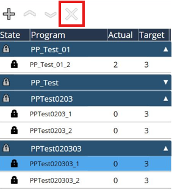

Änderung
Produktionsplanpakete hinzufügen
Diese Funktion dient dazu, die Produktionsplanpakete der Produktionsplanliste hinzuzufügen. Die Originaldateien können sich auf einem lokalen Datenträger, einem Wechseldatenträger oder einem Netzwerkdatenträger befinden. Die hinzugefügten Produktionsplanpakete werden aufgelistet und die Unterjobs, die zu den Produktionsplanpaketen gehören, werden unten einsortiert.
Produktionsplan sperren/entsperren

Diese Funktion dient zum Sperren/Entsperren eines Produktionsplanpakets. Sobald das Produktionsplanpaket importiert wurde, wird es standardmäßig gesperrt. Wählen Sie einen Produktionsplan aus und klicken Sie auf die Schaltfläche Sperren, um den Produktionsplan zu entsperren. Damit ist der Produktionsplan aktiv. Sobald das Produktionsplanpaket aktiv ist, können alle enthaltenen Programme einzeln abgearbeitet werden. Das Sperren/Entsperren wirkt sich auf den gesamten Produktionsplan aus und kann nicht für ein einzelnes Programm ausgewählt werden. Es kann jeweils nur ein Produktionsplan aktiv sein, und dieser aktive Produktionsplan wird in dunkler Farbe hervorgehoben. Der aktive Produktionsplan kann nicht sofort gelöscht werden, jeder andere Arbeitsgang muss den Produktionsplan zuvor sperren.
Anpassen der Reihenfolge des Produktionsplans
Diese Funktion dient dazu, die Priorisierung eines Produktionsplanpakets in der Produktionsplanliste anzupassen. Dadurch wird die Bearbeitungsreihenfolge geändert. Während der Produktionsplan ausgeführt wird, ist diese Funktion deaktiviert. Wählen Sie einen Produktionsplan aus und passen Sie die Reihenfolge mithilfe des Aufwärts-/Abwärtssymbols an. Was oben steht, hat die höhere Priorität. Jeder freigeschaltete Produktionsplan von oben nach unten abgearbeitet. (Funktion noch nicht implementiert)

Produktionsplan löschen
Diese Funktion dient zum Löschen eines Produktionsplanpakets aus der Produktionsplanliste. Wählen Sie einen Produktionsplan aus und verwenden Sie das „X“-Symbol, um ein Produktionsplanpaket zu löschen. Dadurch wird das gesamte ausgewählte Paket gelöscht. Es ist nicht möglich, ein Einzelprogramm zu löschen. Es wird nur der Produktionsplan aus der Produktionsplanliste entfernt, die RAW-Dateien, die auf der lokalen Festplatte gespeichert sind, werden nicht gelöscht. Während der Produktionsplan ausgeführt wird, ist diese Funktion deaktiviert.
